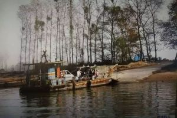
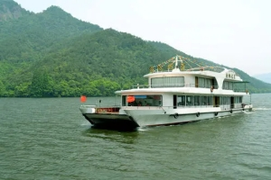
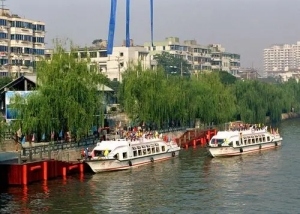

浙江渡轮变化
浙江多江河湖泊，在交通不便的过去，一些地区的百姓出行离不开渡船。几十年间，从最初的木质船，到八九十年代的钢质船，再到如今的双向通行车客渡，时代在变迁，渡运也在发生变化。
 世界最早独木舟
世界最早独木舟
杭州靠山面水，湖泊星罗棋布、河道纵横交错。杭州居民依赖舟船进行交通运输和生产生活的历史可以追溯到七八千年前的跨湖桥文化时期。据考古发掘，2002年跨湖桥遗址出土的独木舟，经测定，距今8000－7000年，是迄今发现世界上最早的独木舟。

水上巴士